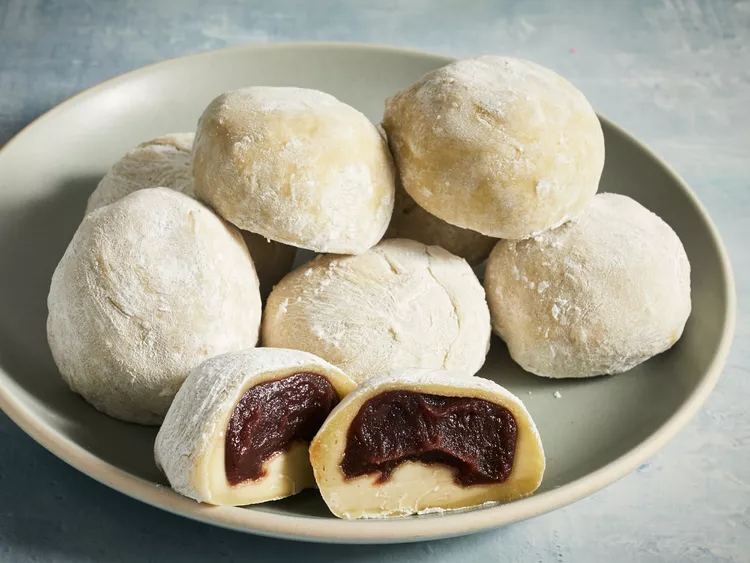

Home
Easy mochi recipe

Mochi are small,
sweet Japanese cakes made with glutinous rice flour (mochiko).
They have a soft, chewy outer layer and a deliciously sticky
filling made of sweetened red bean paste.
Freezing the red bean
paste before you use it is optional but it does make the process easier.
Ingredients
- 1 cup sweetened red bean paste
- cup glutinous rice flour
- 1 teaspoon green tea powder (matcha)
- 1 cup water
- ¼ cup white sugar
- ½ cup cornstarch, for rolling out the dough
Directions
-
Gather all ingredients
-
Wrap red bean paste in aluminum foil and place
in the freezer until solid, at least 1 hour.
-
Mix glutinous rice flour and green tea powder
thoroughly in a microwave-safe bowl.
-
Stir in water, then sugar; mix until smooth.
-
Cover the bowl with plastic wrap and microwave
for 3 minutes 30 seconds.
-
Meanwhile, remove red bean paste from the freezer
and divide into 8 equal balls. Set aside.
-
Remove rice flour mixture from the microwave.
Stir and heat, covered, for another 15 to 30 seconds.
-
Dust a work surface with cornstarch. Roll
about 2 tablespoons of hot rice flour mixture
into a ball. Flatten the ball and place one
ball of frozen red bean paste in the center.
Pinch and press the dough around the bean
paste until completely covered.

-
Sprinkle with additional cornstarch and place mochi,
seam-side down, in a paper muffin liner to prevent sticking.
-
Repeat Step 6 to make remaining mochi.
-
Enjoy!